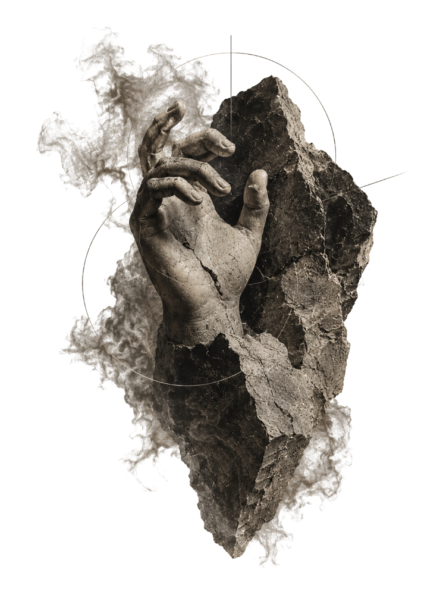
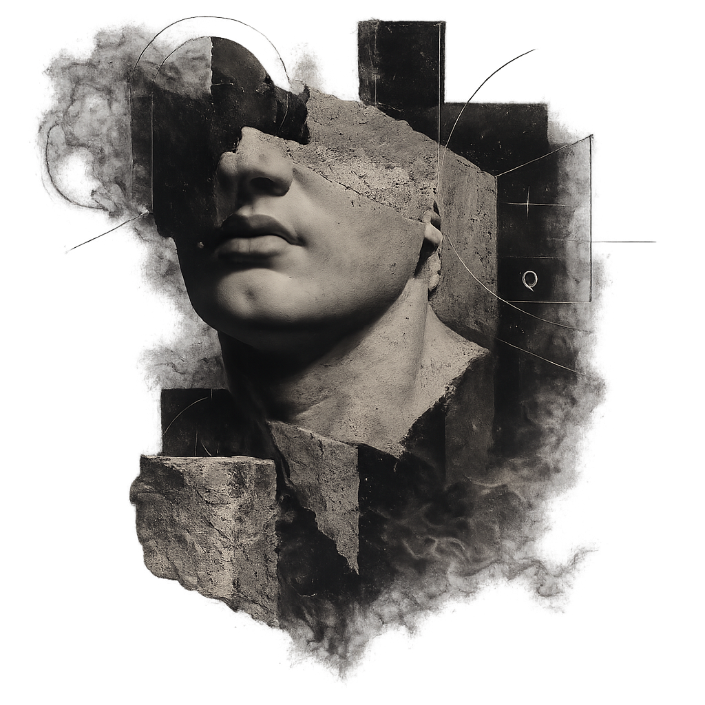
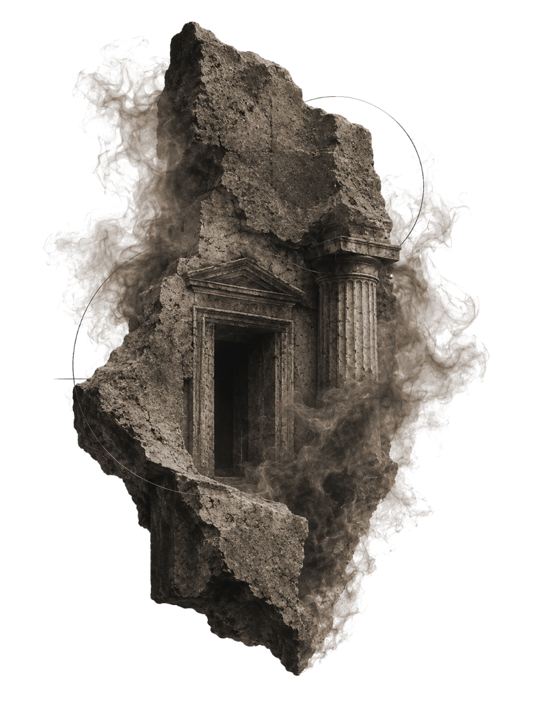

Principles
- Imagery only inside hairline frames
- One specimen per view, never grouped
- Whitespace is the dominant material
- Heavy desaturation toward charcoal
A study on introducing a body of atmospheric, archetypal imagery into Quimera’s disciplined editorial system — not by softening either world, but by letting each reveal something the other cannot say alone.
The current system is architectural, restrained, precise. The new imagery is symbolic, atmospheric, emotionally dense. The instinct would be to sand the images down until they behave like the rest of the system. That instinct is wrong. The contrast is the most valuable thing here — handled deliberately, it becomes the identity of an institution capable of containing complexity rather than flattening it.
Below, the six tensions to design against — each one a dial, not a problem to eliminate.
The interface stays analytical; the imagery carries the emotional charge. Neither has to compromise if they occupy different layers.
Hard grid against soft smoke. The grid is what makes the atmosphere legible as a deliberate choice rather than decoration.
Whitespace is Quimera’s signature. It becomes the frame that lets a dense image read as a specimen, not a background.
Type stays unambiguous; the image is allowed to be ambiguous. The reader always knows what to read, and is invited to interpret what to feel.
The construction lines already in the images are structural. They tie symbolism to system without narration.
The system measures the present; the imagery carries the weight of the classical past. Together: an institution with both rigor and lineage.
 CONSTRUCT · 1 : 1.618
Q · 001
CONSTRUCT · 1 : 1.618
Q · 001
Every fragment is annotated with thin circles, crosshairs and coordinate ticks — the exact device already running through Quimera’s coordinate ribbons and section marks. The images arrive pre-fitted to the grid.
A classical form emerging from fractured rock and smoke is a literal picture of the brand line: reality evolves faster than language; we operate inside that gap. The imagery illustrates the thesis the copy already states.
Stone, ash, bone, charcoal — a near-monochrome that sits a half-step warmer than the ink/bone system. Pulling it toward neutral and letting only lavender touch it makes the two palettes one.
The Quimera system stays in full command. Imagery enters as small, framed specimens set into whitespace — figures and footnotes, never atmosphere. Strongly desaturated, contained, reverent.

Safe, but it wastes the imagery. The emotional charge is quarantined behind glass; the site gains decoration, not depth. Reads as “stock figures” rather than a worldview. Hard to tell these images were chosen with intent.
The grid and the imagery negotiate. A fragment occupies a real column, scaled to compete with the headline; smoke drifts behind the type at low opacity; the image’s own construction lines extend into the layout as live hairlines. Warmth is partly retained, tied back by the lavender accent.


Requires judgement per placement — a lazy crop or too much smoke tips toward mood-board. Needs a contrast rule so type never fights the stone. The payoff: the imagery reads as native, and the site gains depth without losing its head.
The imagery sets the temperature of the page. A fragment goes full-bleed and cropped hard off the frame; smoke veils across; oversized type overlaps the image where contrast allows. The system survives as ruthless typographic discipline and a relentless geometric grid laid over the atmosphere — order imposed on depth.

The real danger zone: at scale, with smoke and classical figures, it can drift toward the mystical / esoteric register we must avoid. Mitigated only by keeping type analytical and lines strictly geometric. Used everywhere, it would overwhelm the system. Used once, it is unforgettable.
Balanced Hybrid (B) should be the system. It is the only direction where the imagery reads as native rather than imported — the fragment earns a column, the smoke gives the page air, and the construction lines already inside each image become the layout’s own hairlines. The two visual worlds stop negotiating and start belonging to the same worldview. Crucially, type stays on a clean field, so nothing is ever sacrificed for atmosphere.
Bold Fusion (C) is the punctuation, not the paragraph. Deploy it exactly twice — the opening hero and one closing interstitial — where a single full-bleed fragment can do the emotional work no headline can. Its power depends entirely on scarcity; spread across the site it would tip into the mystical register the brief rightly forbids.
Conservative Bridge (A) keeps its discipline where legibility is non-negotiable — the Services architecture, the Selected Work table, the Contact block. There, a single framed specimen is exactly right, and atmosphere would only get in the way of reading.
The result is one institution speaking in three volumes: analytical where it must be, atmospheric where it can afford to be, and — at two carefully chosen thresholds — unforgettable.
